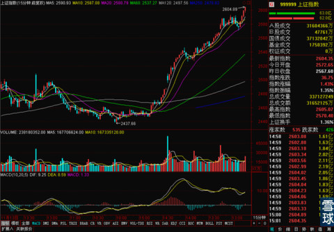
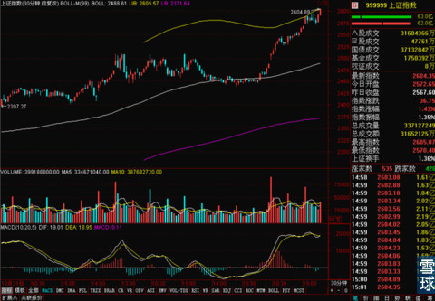
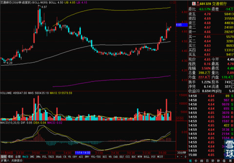

呃！昨天邻居家来了两个熊孩子做客，在屋子里各种打闹，吵得一晚上没有睡好，今天中午看了下大盘走得还不错，下午就去补觉去了。没想到等我睡醒了再看的时候，收盘价居然站上了2600，这也有点太凶残了吧！
虽然昨天预测了一下，感觉今天的走势因为周一周二的连续上涨已经形成明显的惯性，V字型反转的大调整不会在今天出现，但是实在是没想到居然会在尾盘摸到2600这个价位，最近的大盘实在是太喜欢给惊喜了。
看完收盘价之后仔细看了看分时走势，发现下午有一波下探，下探到了15分钟线的MA20就反弹并且强势上攻了。

但是30分钟线的MACD走平和粘合的迹象也很明显，同时也接触到了BOLL上轨，简单估计一下的话，明天可能是上午冲高，下午要回落的节奏，周五继续在稍微低一些的价位上横盘，估计在2600整数关口可能有一定的争夺。

今天的有色类股票没有延续昨天的强势姿态，但是中长线依然没有太大问题。今天的证券，银行和保险上攻的太激烈了。所以中午睡觉之前挂了两笔交通银行的单子，一笔挂在4.48，一笔挂在4.52。睡醒了发现4.52这笔单子成交了。

挂在这两个价位主要就是看30分钟线的走势还不错，就选了两个接近30分钟线BOLL中轨的价位，看看是不是有回踩，如果回踩了可能就成交进去了。而且有30分钟线中轨支撑，即使短期不涨也不会马上就跌下去。没想到尾盘一看收益还不错。
证券类股票的行情从大盘这次上涨以来一直都很抢眼，我之前也一直关注了，但是因为我的原因错失最好的建仓机会。其实像东北证券这种走势，很标准的突破周线BOLL中轨再回踩，很好的形态和机会，但是那个时候因为不是极其确定是牛市开始阶段，于是最后选择了太原刚玉建仓，东北证券后来就不怎么太关注了。等我再重新关注证券类股票的时候，很多都启动了一段时间，于是锁定了之前涨幅不大，但是也突破了周线BOLL中轨的广发证券，结果广发证券根本就没回踩中轨，一般情况下，没有回踩动作的，我都不会贸然建仓，于是我就眼争争看着它一骑绝尘的飙上去了。
 |
呃！昨天邻居家来了两个熊孩子做客SaiLv 2014-11-26 21:00:59 |
Copyright © 1996-2014 SINA Corporation All Rights Reserved.